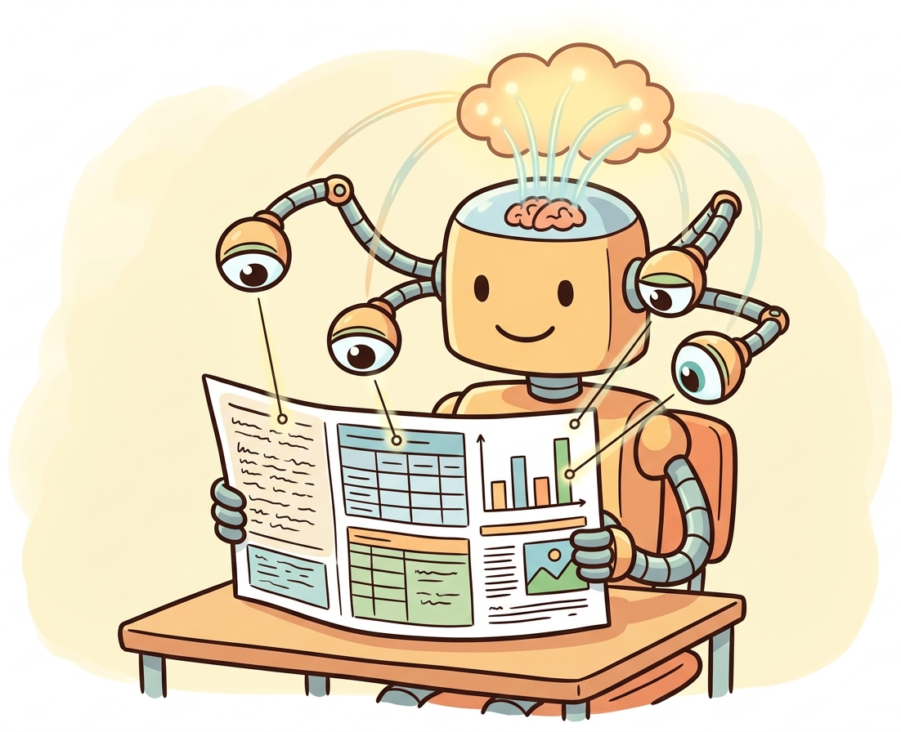

"To a human, a receipt is just a crumpled piece of paper. To me, it is a structured data extraction problem with spatial reasoning."
Pixel AI Agent

Prerequisites
This section requires understanding of the vision-language model architectures from Section 27.1 and Section 27.2. Familiarity with tokenization from Section 02.1 provides context for how audio and video signals are discretized for transformer processing.
Documents are among the most important sources of unstructured data in the real world. Invoices, contracts, medical forms, receipts, and tax documents contain critical information locked in visual layouts that combine text, tables, figures, and spatial structure. Document understanding goes beyond simple OCR (recognizing characters) to comprehend how text elements relate to each other spatially and semantically. The field has evolved from rule-based template matching through layout-aware transformer models (building on the transformer architecture from Chapter 04) to modern VLMs that can understand documents in a single forward pass. The chunking and document processing strategies from Section 19.4 complement these techniques for building complete document pipelines.
1. Modern OCR with TrOCR Intermediate
Traditional OCR systems use convolutional neural networks for character recognition, often combined with recurrent layers (CRNN) for sequence modeling.
Doctors' handwriting has been the unofficial benchmark for OCR difficulty since the 1990s. Modern TrOCR models can finally read most prescriptions, which puts them ahead of most pharmacists.
TrOCR (Transformer-based OCR) replaces this entire pipeline with an encoder-decoder transformer. The encoder is a vision transformer (ViT or BEiT) pre-trained on images, and the decoder is a language model pre-trained on text. This architecture benefits from large-scale pre-training on both visual and textual data, achieving state-of-the-art results on handwritten and printed text recognition. Code Fragment 27.3.1 below puts this into practice.
# TrOCR: Transformer-based OCR for printed and handwritten text
# Uses a pre-trained ViT encoder + language model decoder for end-to-end recognition
from transformers import TrOCRProcessor, VisionEncoderDecoderModel
from PIL import Image
# Load TrOCR for printed text recognition
processor = TrOCRProcessor.from_pretrained("microsoft/trocr-large-printed")
model = VisionEncoderDecoderModel.from_pretrained("microsoft/trocr-large-printed")
model = model.to("cuda")
# OCR on a cropped text line image
image = Image.open("text_line.png").convert("RGB")
pixel_values = processor(images=image, return_tensors="pt").pixel_values.to("cuda")
generated_ids = model.generate(pixel_values, max_new_tokens=128)
text = processor.batch_decode(generated_ids, skip_special_tokens=True)[0]
print(f"Recognized text: {text}")OCR answers "what text is on this page?" while document understanding answers "what does this document mean?" A receipt might have the text "42.50" in multiple places, but document understanding identifies which one is the total, which is tax, and which is a line item price. This requires understanding the spatial layout, reading order, and semantic relationships between text elements. Modern systems combine OCR with layout analysis and entity extraction to bridge this gap.
2. The LayoutLM Family Intermediate
The LayoutLM family of models (LayoutLM, LayoutLMv2, LayoutLMv3, LayoutXLM) pioneered the idea of jointly modeling text content, visual features, and 2D positional information in a single transformer. These models treat document understanding as a multimodal problem where the spatial arrangement of text is as informative as the text itself.
LayoutLMv3 Architecture
LayoutLMv3 unifies text, layout, and image pre-training with a single multimodal transformer. Text tokens receive both word embeddings and 2D position embeddings (bounding box coordinates on the page). Image patches are embedded alongside text tokens. The model is pre-trained with three objectives: masked language modeling, masked image modeling, and word-patch alignment. This design allows LayoutLMv3 to understand that text at the top-right of an invoice is likely a date, while numbers in a right-aligned column are likely prices. Figure 27.3.1 shows the LayoutLMv3 architecture. Code Fragment 27.3.2 below puts this into practice.
# LayoutLMv3 for document entity extraction
# Processes text content, 2D bounding box layout, and image features together
from transformers import AutoProcessor, AutoModelForTokenClassification
from PIL import Image
# Load LayoutLMv3 fine-tuned for document entity extraction
processor = AutoProcessor.from_pretrained(
"microsoft/layoutlmv3-base",
apply_ocr=True, # Built-in Tesseract OCR
)
model = AutoModelForTokenClassification.from_pretrained(
"microsoft/layoutlmv3-base",
num_labels=7, # e.g., HEADER, QUESTION, ANSWER, etc.
)
# Process a document image
image = Image.open("invoice.png").convert("RGB")
encoding = processor(image, return_tensors="pt")
# Run inference
outputs = model(**encoding)
predictions = outputs.logits.argmax(-1).squeeze().tolist()
# Map predictions to words
words = encoding["input_ids"].squeeze().tolist()
tokens = processor.tokenizer.convert_ids_to_tokens(words)
for token, pred in zip(tokens, predictions):
print(f"{token}: label_{pred}")3. Document AI Pipelines Intermediate
Production document understanding typically involves a multi-stage pipeline: document classification (what type of document is this?), OCR (extract text with bounding boxes), layout analysis (identify regions like headers, tables, paragraphs), entity extraction (find specific fields like dates, amounts, names), and validation (check extracted values for consistency). Each stage can use specialized models or a single end-to-end model. Code Fragment 27.3.3 below puts this into practice.
Building a Document Processing Pipeline
# Two-stage document pipeline: Tesseract OCR + LayoutLM question answering
# Stage 1 extracts text with bounding boxes; Stage 2 answers structured queries
import pytesseract
from PIL import Image
from transformers import pipeline
# Stage 1: OCR with Tesseract
image = Image.open("receipt.png")
ocr_data = pytesseract.image_to_data(
image, output_type=pytesseract.Output.DICT
)
# Extract words and bounding boxes
words, boxes = [], []
for i in range(len(ocr_data["text"])):
if ocr_data["conf"][i] > 50: # Confidence threshold
words.append(ocr_data["text"][i])
boxes.append([
ocr_data["left"][i],
ocr_data["top"][i],
ocr_data["left"][i] + ocr_data["width"][i],
ocr_data["top"][i] + ocr_data["height"][i],
])
# Stage 2: Document question answering with LayoutLM
doc_qa = pipeline(
"document-question-answering",
model="impira/layoutlm-document-qa",
)
result = doc_qa(image, "What is the total amount?")
print(f"Total: {result[0]['answer']} (confidence: {result[0]['score']:.2f})")Traditional OCR + LayoutLM: Best for high-volume, structured documents with consistent layouts (invoices from known vendors, standardized forms). Lower cost per document, deterministic output, and field-level confidence scores.
VLM-based extraction (GPT-4V, Gemini): Best for diverse document types, unstructured layouts, or documents that require reasoning (contracts, multi-page reports). Higher cost per document but handles novel layouts without retraining.
Hybrid pipeline: Use OCR + LayoutLM for high-volume standard documents, and route unusual or complex documents to a VLM. This captures the cost efficiency of specialized models for the common case while using VLMs for the long tail. The hybrid ML/LLM framework from Chapter 12 provides a decision framework for this routing.
VLM-Based Document Understanding
Vision-language models like GPT-4V, Gemini, and Qwen-VL offer a fundamentally different approach to document understanding. Instead of specialized OCR and layout models, you simply pass the document image to a VLM and ask questions in natural language. This approach requires no OCR preprocessing, handles diverse document types without task-specific fine-tuning, and can reason about complex layouts, charts, and tables. The tradeoff is higher latency, higher cost per document, and less predictable structured outputs compared to specialized pipelines. Code Fragment 27.3.4 below puts this into practice.
# VLM-based document extraction: send an invoice image to GPT-4o
# The model reads, understands layout, and returns structured JSON
from openai import OpenAI
import base64
client = OpenAI()
# Encode the document image
with open("invoice.png", "rb") as f:
img_b64 = base64.b64encode(f.read()).decode()
# Extract structured data using a VLM
response = client.chat.completions.create(
model="gpt-4o",
messages=[{
"role": "user",
"content": [
{"type": "text", "text": """Extract the following fields from this invoice as JSON:
- vendor_name, invoice_number, date, line_items (description, qty, price), subtotal, tax, total"""},
{"type": "image_url", "image_url": {
"url": f"data:image/png;base64,{img_b64}"
}},
],
}],
response_format={"type": "json_object"},
)
print(response.choices[0].message.content)The document AI field is converging toward two distinct approaches for different use cases. For high-volume, structured document processing (thousands of invoices per day), specialized pipelines with LayoutLM and custom entity extractors offer the best cost-performance ratio. For diverse, unstructured, or low-volume document understanding (analyzing a contract you have never seen before), VLMs provide superior flexibility with minimal setup. Many production systems use a hybrid approach: VLMs handle novel document types and edge cases, while specialized models process the high-volume common formats. Figure 27.3.2 provides a decision tree for selecting the right approach.
4. Comparing Document Understanding Approaches Intermediate
| Approach | Speed | Accuracy | Flexibility | Cost | Best For |
|---|---|---|---|---|---|
| Traditional OCR (Tesseract) | Fast | Moderate | Low | Free | Simple text extraction |
| TrOCR | Moderate | High | Low | GPU required | Handwriting, degraded text |
| LayoutLMv3 | Moderate | High | Medium | GPU, fine-tuning | Structured extraction at scale |
| VLM (GPT-4o, Gemini) | Slow | High | Very High | API per-token | Diverse docs, low volume |
| Cloud Doc AI (AWS Textract) | Fast | High | Medium | Per-page pricing | Enterprise, compliance |
Real-world documents are messy. They arrive as scanned PDFs with varying quality, rotated pages, handwritten annotations, stamps, and redactions. Production document AI systems need robust preprocessing: deskewing, denoising, resolution enhancement, and page segmentation before any model sees the content. Testing on clean benchmark datasets (FUNSD, CORD, DocVQA) gives an overly optimistic picture of how models perform on real corporate documents. Always evaluate on a representative sample of your actual document inventory.
Choosing between cloud Document AI services (2024/2025). For enterprise document processing, three cloud services dominate. AWS Textract provides tables and forms extraction with per-page pricing ($1.50/1000 pages for forms), strong at structured US tax and financial documents. Google Document AI offers pre-trained "processors" for invoices, receipts, W-2s, and lending documents, with a custom processor option for domain-specific layouts. Azure AI Document Intelligence (formerly Form Recognizer) includes pre-built models for invoices, receipts, and identity documents, plus a custom neural model trainer. For choosing between them: Textract integrates naturally with AWS workflows, Google Document AI handles multilingual documents best, and Azure provides the strongest custom training tools. All three support asynchronous batch processing for high-volume pipelines. For open-source alternatives, docling (by IBM, 2024) converts PDFs and documents to structured markdown with layout-aware chunking, integrating directly with LlamaIndex and LangChain for RAG pipelines.
Knowledge Check
Show Answer
Show Answer
Show Answer
Show Answer
Show Answer
Who: Accounts payable team at a logistics company processing 15,000 invoices per month
Situation: Invoices arrived in dozens of formats from hundreds of vendors: scanned paper, emailed PDFs, photographed receipts, and multi-page contracts with embedded billing tables.
Problem: Manual data entry took 8 minutes per invoice on average, with a 4% error rate that caused payment disputes and vendor relationship issues.
Dilemma: Template-based OCR worked well for the top 20 vendors (60% of volume) but failed on the remaining 200+ vendors with unpredictable layouts. A VLM approach handled diverse formats but cost $0.15 per page.
Decision: The team built a hybrid pipeline: LayoutLMv3 for high-volume vendor templates and GPT-4o as a fallback for novel or complex documents.
How: They fine-tuned LayoutLMv3 on labeled invoices from the top 20 vendors, achieving 97% field extraction accuracy. A confidence threshold routed low-confidence extractions to the VLM fallback. All outputs passed through a validation layer that cross-checked totals against line items.
Result: Processing time dropped to 15 seconds per invoice. The error rate fell below 1%. The hybrid approach cost $0.02 per invoice on average, since 75% of documents were handled by the cheaper specialized model.
Lesson: Hybrid document AI pipelines that route between specialized models and general-purpose VLMs based on confidence scores optimize both accuracy and cost at scale.
When querying a vision model about an image, add context that the model cannot see: "This is a medical X-ray of a chest" or "This screenshot is from our inventory dashboard." Domain context dramatically improves interpretation accuracy.
Key Takeaways
- TrOCR replaces traditional CNN+RNN OCR with an encoder-decoder transformer, leveraging pre-trained vision and language models for superior text recognition.
- LayoutLMv3 jointly models text, 2D layout, and image features, understanding that spatial arrangement carries semantic meaning in documents.
- Document AI pipelines combine OCR, layout analysis, and entity extraction in sequence, with each stage feeding into the next for structured data output.
- VLMs (GPT-4o, Gemini) offer a flexible alternative that handles diverse document types without task-specific fine-tuning, at the cost of higher latency and per-token pricing.
- The choice between approaches depends on document novelty, processing volume, and accuracy requirements: specialized pipelines for high-volume known formats, VLMs for diverse or novel documents.
- Preprocessing is critical in production: real-world documents are far messier than benchmark datasets, requiring deskewing, denoising, and quality checks.
Open Questions:
- Can VLMs fully replace specialized document AI pipelines? Current VLMs achieve impressive zero-shot performance on diverse documents, but specialized models still lead on structured extraction tasks at scale. The convergence point may depend more on cost reduction than accuracy improvement.
- How do we handle documents that mix printed text, handwriting, stamps, and photographs? Multi-script, multi-layout documents remain challenging for all approaches, and few benchmarks adequately test these real-world conditions.
Recent Developments (2024-2025):
- ColPali and ColQwen (covered in Section 19.5) enable vision-based document retrieval that bypasses OCR entirely, using late-interaction multi-vector retrieval on document page images.
- Google's Gemini 2.5 Pro with its 1M token context window enables processing of 100+ page documents in a single pass, competing with specialized document pipelines for long-form extraction tasks.
- Florence-2 (Microsoft, 2024) introduced a unified vision foundation model that handles OCR, captioning, object detection, and grounding in a single architecture, blurring the line between document understanding and general vision tasks.
Explore Further: Compare extraction accuracy on a diverse set of 50 real invoices using three approaches: Tesseract + regex, LayoutLMv3 fine-tuned, and GPT-4o zero-shot. Track both accuracy and cost per document to find the crossover point.
Exercises
Compare TrOCR (transformer-based OCR) with traditional OCR approaches (Tesseract). What advantages do transformer models bring to text recognition?
Answer Sketch
Traditional OCR (Tesseract): rule-based character segmentation, limited context awareness, struggles with handwriting and unusual fonts. TrOCR: encoder-decoder transformer, learns character recognition from context, handles diverse fonts and handwriting, produces higher accuracy on complex layouts. TrOCR benefits from pre-training on large datasets and can be fine-tuned for domain-specific documents.
Explain how LayoutLM incorporates spatial information (x, y coordinates) into text understanding. Why is spatial information important for document AI?
Answer Sketch
LayoutLM adds 2D positional embeddings to each token based on its bounding box coordinates in the document. This lets the model understand that 'Total: $100' at the bottom right of an invoice means something different from the same text in a body paragraph. Spatial information is critical because documents use layout (tables, headers, columns) to convey meaning that is lost in plain text extraction.
Design a document processing pipeline that takes a PDF, performs OCR, extracts structured fields (date, amount, vendor), and returns a JSON object. Describe each stage and its purpose.
Answer Sketch
Stage 1: PDF to images (pdf2image). Stage 2: OCR with TrOCR or Tesseract to extract text with bounding boxes. Stage 3: Layout analysis to identify regions (header, table, body). Stage 4: Field extraction using a fine-tuned LayoutLM or an LLM with the extracted text and coordinates. Stage 5: Validation (check date format, amount is numeric, vendor matches known list). Return structured JSON.
Write code to extract tables from a document image. Use a model or heuristic to detect table boundaries, then parse the table into rows and columns.
Answer Sketch
Use a table detection model (e.g., DETR fine-tuned on PubTables-1M) to identify table bounding boxes. Crop the table region. Use OCR to extract text with coordinates. Group text by rows (similar y-coordinates) and columns (similar x-coordinates). Build a 2D array and export as a pandas DataFrame. Handle merged cells by checking for spans.
How should document understanding models be evaluated? Describe appropriate metrics for OCR accuracy, field extraction accuracy, and end-to-end pipeline performance.
Answer Sketch
OCR: Character Error Rate (CER) and Word Error Rate (WER). Field extraction: precision, recall, and F1 per field type. End-to-end: exact match rate for each extracted field, plus a 'document accuracy' score (fraction of documents where all fields are correct). Also measure processing time per document and cost per page for production viability.
What Comes Next
In the next section, Section 27.4: Unified Multimodal Models and Omni-Architectures, we examine the convergence of all these modalities into single unified models like GPT-4o and Gemini that can process and generate across text, images, audio, and video natively.